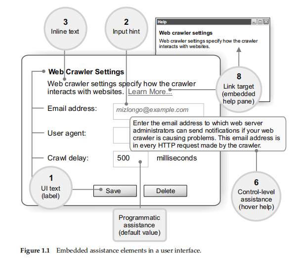
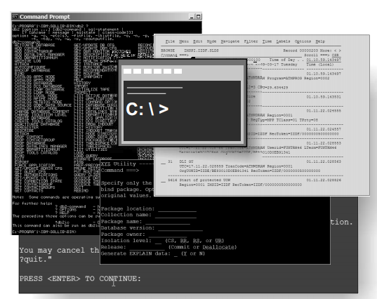
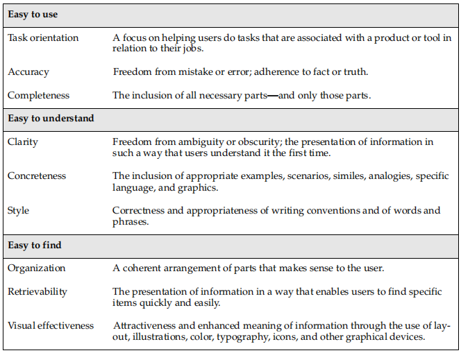

Develop quality technical information
DQTI 可以说是技术写作里的圣经宝典之一了，想要成为一名合格的 technical writer 一定要拜读这本大作。今天小编带大家一起阅读本书的前言部分，了解一下究竟什么是有质量的技术信息，这本书该怎么读。
首先假设你刚上手使用一个新产品，在熟悉产品的过程中我们倾向于在用户界面自我探索，而不愿意点击帮助链接，查看帮助文档很容易打断手头的工作。遇到问题首先问身边的同事或者到网上看视频教程，就是不愿意看帮助文档。
为什么会这样呢？习惯使然。
在过去专业技术产品面向技术专家，他们本身就精通该技术，帮助文档对于他们来讲可有可无。而现在，在科技迅猛发展的时代，越来越多新的技术产品将会进入“普通”用户的视野中。可如何让技术能够快速上手，方便易用成了TCer们的使命。
技术写作是一项完完全全以用户为中心的写作岗位，如果你关注一下DQTI这本书重复率最高的词应该就是user了，可见用户就是本书的C位了。
嵌入式协助信息 (embedded assistance)
除了技术产品本身，还要关注产品界面设计、字段消息、标签等等，这里将之统称为嵌入式协助文档（embedded assistance）。和独立帮助文档不同的是它们会和产品使用界面一同展现给用户，让用户自然而然地接受信息引导。以下就是嵌入式协助信息的几个种类：

这是基于ASCII界面的非图形软件文本的嵌入式协助信息：

这是硬件文本的嵌入式协助信息：

渐进式信息披露 (Progressive disclosure of information)
Jakob Nielsen: “Progressive disclosure defers advanced or rarely used features to a secondary screen, making applications easier to learn and less error-prone.”
作者想强调的第二点渐进式信息披露 (Progressive disclosure of information)，指的是所有文档（嵌入式协助信息、帮助链接、文档等等）都必须能够顺畅地展现在用户面前，也就是要设计出连贯的故事感。
Technical Writer 的职能转变
如今技术写作人员除了单纯处理文本，还要关注嵌入式协助信息、渐进信息展示等等方面。这都意味着TW的职能进一步渗透至产品设计、用户界面等流程，TW的工作流程往前进了。
过去的工作流程即瀑布式工作流程 (waterfall development processes)，就是说一个环节任务完成后再移交至下一个环节的负责团队，这使得下游团队很难更改上游团队的工作设计。文档一般最终环节才会交付给TW进行处理，而此时很难更改不合格的内容涉及，这样TW又要在此基础上开发文档。
为了解决这一问题，开发团队开始采用敏捷开发流程(agile development process)，可以跨团队进行迭代开发。这样团队成员能够看到并借鉴相互交付的成功，产品可以说是举全队之力的产出了。敏捷开发正如其名，让产品设计随需求迅速变化。在这种模式的团队中，TW的职能变得非常关键了，从最早期设计阶段、代码书写到最后完成全阶段都要参与。
重新定义高质量技术信息
DQTI 这本书阐述了高质量技术信息有哪些特点。开发高质量技术信息需要了解用户心理、为用户提出建议并对所有形式的文本措辞负责。
作者一直强调文本必须以用户为中心，因为高质量的信息是由用户定义的。如果用户在寻找信息时问题重重就算不得好的技术文档。要知道信息质量会影响用户对于产品质量的感官和整体满意度，同时还会左右他们的购买决策。在整体产品开发过程中，TW要成为用户体验的保障者。
高质量技术信息要能展现用户所想，给予用户所需。以下是作者整理的几大高质量技术信息的特点，全书也是以此为结构一一展开的：

小编语
DQTI的前言导读就到此为止啦，是不是对技术文档的工作有了进一步了解呢？这本TW届的圣经接下来都会围绕“easy to use”、“easy to understand”、“easy to find”进行详细阐述。我会在接下来几天慢慢将此书解构一点点整理出读书笔记，与大家分享。欢迎关注，共同探讨哦 。
本文主要内容来源于《Developing Quality Technical Information》，仅作学习分享。
如需转载请注明作者与来源。